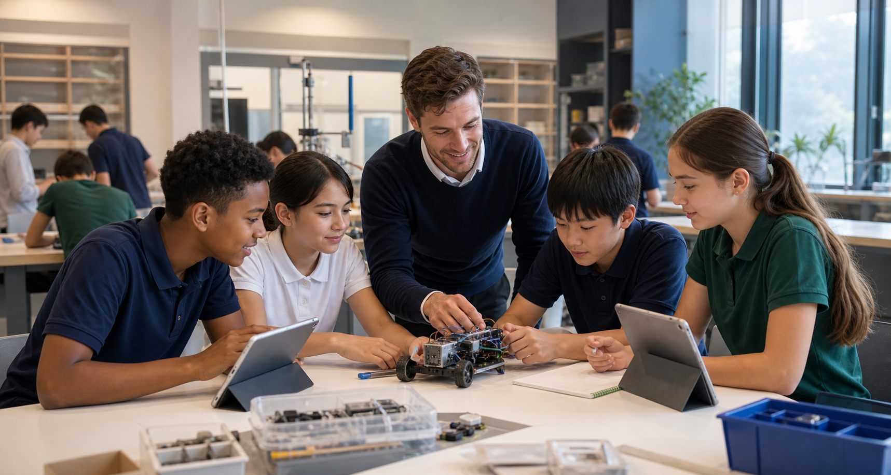

青云书院初中部
G7-G8 开设英语语言文学、中文语言文学、数学、科学、社会学、STEAM、国际视野、艺术、音乐、体育、SEL、导师课与社团。

Curriculum
课程汲取美式教育的批判性思维与探究精神，融合英式教育的严谨架构与深度考核，让学生从广泛阅读走向概念掌握与跨学科创造。
G7-G8 开设英语语言文学、中文语言文学、数学、科学、社会学、STEAM、国际视野、艺术、音乐、体育、SEL、导师课与社团。
面向 G9X / G10X，强化国际高中衔接、竞赛支持、学术写作、学科衔接与升学规划。
One of School 个性化路径，通过导师、项目、资源组合和学习计划形成一人一案。
整合 AI 工具、微控制器与创客技术，让学生从真实问题出发制作原型，并通过赛事检验成果。
Learning Design
广泛阅读保护好奇心，核心概念学习建立底层逻辑，跨学科项目让知识走出课本、走进生活。学生不只是追求高分，更要成为能自信应对复杂情境的未来解决者。
AI Fluency · Human Judgement
AI School 不是一门孤立的“人工智能课”。它是一种贯穿学科的学习方式：学生借助生成式 AI、数据与自动化工具拓展研究边界，同时保留提问、核验、解释和负责的完整过程。

先定义问题与目标，再决定是否以及如何使用 AI。
交叉检查来源、事实、数据与模型偏差，不把生成内容直接当作答案。
把工具用于研究、代码、数据、原型与表达，让学习产生可见作品。
说明 AI 如何参与，解释关键选择，并对最终成果承担学术责任。

Middle School Subjects
英语语言文学、中文语言文学、数学、科学、社会学、STEAM、国际视野、艺术、音乐、体育、SEL、导师课与社团共同构成 G7-G8 的学习体验。每个学科都服务于阅读、表达、探究、合作和自我管理。
了解入学评估
学生通过建模、实验、原型制作和展示，把抽象概念变成可观察、可解释、可迭代的学习成果。

英文阅读、中文表达、辩论和写作工作坊共同训练学生的理解力、判断力和双语表达。

项目展、学习汇报和作品展示让家长看见学生如何思考、如何合作，以及如何在反馈中继续改进。
Academies
查看凌云与青云书院
 Admissions
预约一次开放日
Admissions
预约一次开放日